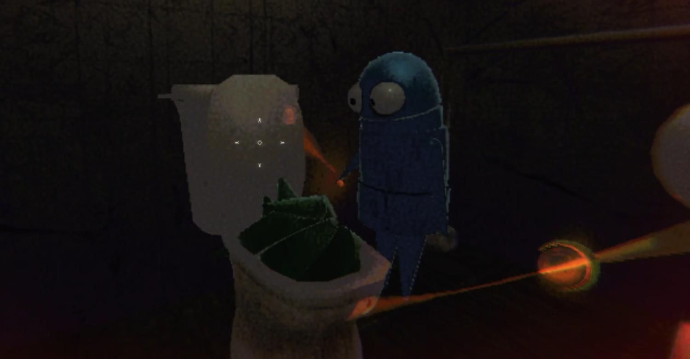
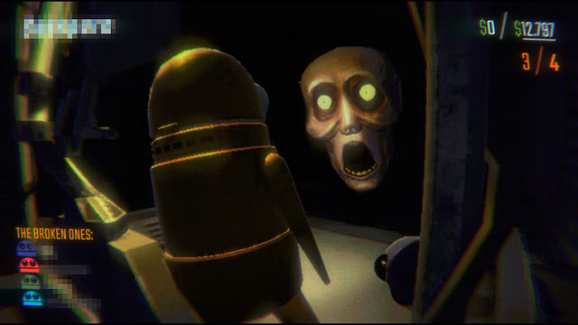

Objective
In R.E.P.O., players assume the roles of retrieval specialists—small, bean-shaped robots tasked with infiltrating abandoned, monster-infested locations to collect valuable items. The primary objective is to meet or exceed a set monetary quota by successfully extracting these items without falling victim to the lurking dangers.
Gameplay Mechanics
- Controls: Players interact with objects using the 'E' key, view the map with 'Tab', and manage their inventory accordingly. :contentReference[oaicite:1]{index=1}
- Maps: The game features various procedurally generated maps, each presenting unique challenges and layouts. Familiarity with map layouts and extraction points is crucial for efficient navigation and successful loot extraction. :contentReference[oaicite:2]{index=2}
- Extraction Point: Once the monetary quota is met, players must locate and reach the extraction point to successfully complete the mission. Proper placement of items within the extraction zone is essential to avoid loss. :contentReference[oaicite:3]{index=3}
Team Dynamics
While R.E.P.O. can be played solo, it is designed for cooperative play with up to six players. Effective communication and teamwork are vital, as players must coordinate their efforts to transport bulky items, distract or evade monsters, and strategize their loot collection to meet quotas efficiently.

Challenges
Players will encounter various monsters, each with unique behaviors and attack patterns. Understanding these patterns and developing strategies to avoid or counteract them is essential for survival. Additionally, handling loot requires care, as rough handling can damage items, reducing their value or rendering them worthless. :contentReference[oaicite:5]{index=5}
 